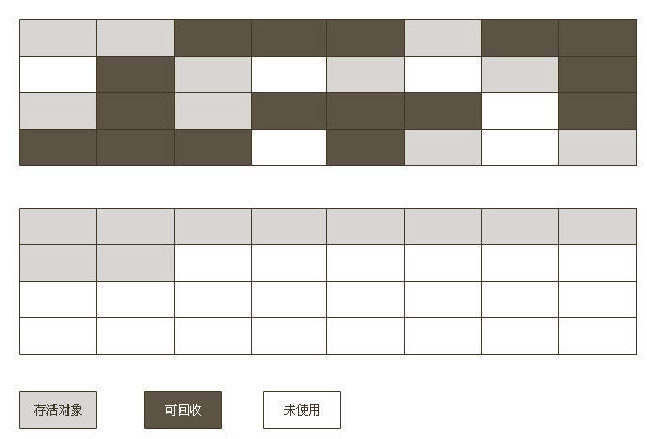
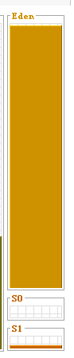
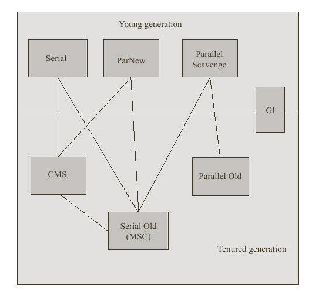

标记-整理算法
标记-整理算法首先将可回收对象进行回收，回收后将存活对象向一端移动
一般用于老年代回收

复制算法
复制算法将内存分为3块区域：
eden，s0，s1，默认比例为8:1:1对象默认在
eden区进行创建当第一次GC时将
eden区中存活的对象放入s0中第二次时将
eden和s0中的存活对象放入s1中第三次将
eden和s1中的存活对象放入s0中当
s0和s1空间不够时由老年代进行过空间分配担保该算法一般用于新生代回收

垃圾收集器

Serial收集器
单线程收集器，在进行垃圾收集时必须暂停所有其他工作线程，直到它收集结束
新生代：复制算法，暂停所有用户线程
使用参数：-XX:+UseSerialGC
Serial Old收集器
Serial收集器的老年代版本
老年代：标记-整理算法，暂停所有用户线程
使用参数：-XX:+UseSerialGC
ParNew收集器
Serial收集器的多线程版本
新生代：复制算法，多线程垃圾收集，暂停所有用户线程
使用参数：-XX:+UseParNewGC
Parallel Scavenge收集器
该收集器的目标是达到一个可控制的吞吐量，高吞吐量可以高效利用CPU时间，尽快完成任务，适合后台运算而不需要太多交互的任务。
吞吐量=运行用户代码时间/（运行用户代码时间 + 垃圾收集时间），虚拟机运行了100分钟，垃圾收集花费1分钟，吞吐量为99%
新生代：复制算法，多线程垃圾收集，暂停所有用户线程
使用参数：-XX:+UseParallelGC
-XX：MaxGCPauseMillis：大于0的毫秒数，收集器尽可能保证回收花费的时间不超过设定值
-XX：GCTimeRatio：大于0小于100的整数，就是垃圾收集时间占总时间的比率，相当于是吞吐量的倒数。如果把此参数设置为19，那允许的最大GC时间就占总时间的5%（即1/（1+19）），默认值为99，就是允许最大1%（即1/（1+99））的垃圾收集时间
-XX：+UseAdaptiveSizePolicy：当这个参数打开之后，就不需要手工指定新生代的大小（-Xmn）、
Eden与Survivor区的比例（-XX：SurvivorRatio）、晋升老年代对象年龄（-XX：
PretenureSizeThreshold）等细节参数了，虚拟机会根据当前系统的运行情况收集性能监控信
息，动态调整这些参数以提供最合适的停顿时间或者最大的吞吐量，这种调节方式称为GC
自适应的调节策略
Parallel Old收集器
Parallel Scavenge收集器的老年代版本
老年代：标记-整理算法
使用参数：-XX:+UseParallelOldGC
CMS收集器
该收集器是一种以获取最短回收停顿时间为目标的收集器
该收集器收集分为4个步骤：初始标记（Stop The World），并发标记，重新标记（Stop The World），并发清除
老年代：标记-清除算法
使用参数：-XX:+UseConcMarkSweepGC
缺点：对CPU资源敏感，无法处理浮动垃圾（并发清除时用户线程还在运行产生新的垃圾），基于标记-清除进行收集（产生内存碎片）
-XX：+UseCMSCompactAtFullCollection：在顶不住需要FullGC时进行内存碎片合并（默认开启）
-XX：CMSFullGCsBeforeCompaction：设置执行多少次不压缩的Full GC后，跟着来一次带压缩的（默认值为0，表示每次进入FullGC时都进行碎片整理）